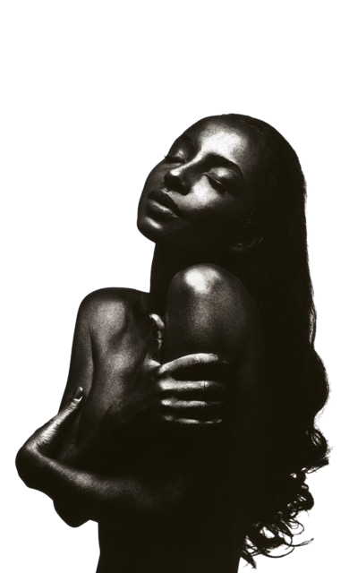

p o r t f o l i o
ANNA PACHECO

ABOUT ME
Me chamo Ana, tenho 17 anos de idade e adoro o ar livre,
adoro programar coisas por fora das matérias no meu tempo livre e amo correr.
Como já disse tenho um apreço grande pelo ar livre,
pois é um ambiente que proporciona momentos de conexão
com a natureza e de lazer.
Outro passatempo meu que acho interessante ditar é jogar e andar de patins, pois demonstram um equilíbrio
saudável para atividades físicas e recreativas.
Planejo atuar na área de Tecnologia da Informação (T.I.), desejo ajudar
outras pessoas com o que sei
fazer de bom e contribuir com todos.
Á R E A S
C U R R I C U L A R E S